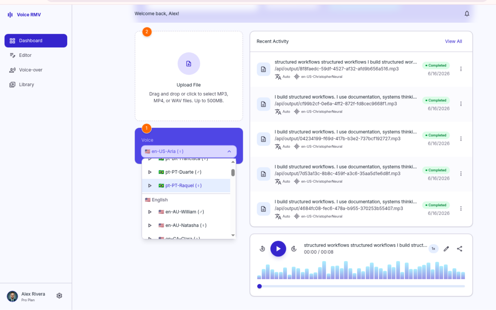
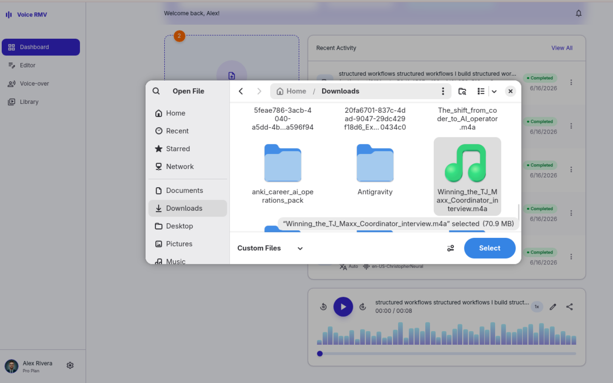
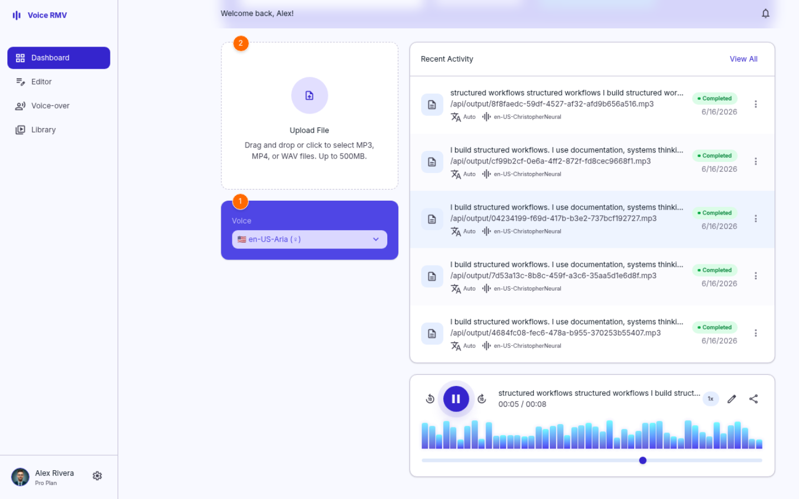

Voice-RMV: Transforming Content
into AI-Powered Workflows
Low-cost neural voice generation through edge-tts, avoiding traditional per-character commercial TTS APIs while keeping the workflow accessible without local GPU infrastructure.
Voice-RMV is a practical proof of how I map operational bottlenecks, organize production stages, and apply automation to transform manual content processes into reviewable workflows that generate business value.
Audio generated by the Voice-RMV workflow from reviewed text, voice generation, and human quality control.
How it started
Every solution starts when an operational need stops being just an idea and starts revealing where the process is breaking.
That is how Voice-RMV came to be.
In one of my projects, I realized the problem was not just about creating content. The problem was turning that content into delivery. There were videos, texts, and messages with potential, but the process to adapt, translate, narrate, and reuse that material was slow, manual, and fragmented.
Communication existed, but it did not always reach the right audience with full impact. Production existed, but part of it was lost along the way. The opportunity to sell, teach, or expand into other languages was there — but it depended on taking the process off the drawing board and turning the idea into a real operation.
Voice-RMV was born from this need: to increase the speed of production and delivery of content in different languages, creating a flow where text, video, and audio could be transformed into reviewable, reusable narrations ready to generate value.
To structure this solution, I used generative AI as a planning, organization, and idea-validation partner. From there, I designed the workflow you will see in the next sections: a process built to reduce bottlenecks, improve delivery, and show how AI can be applied within a real operation — not as an isolated tool, but as part of a controlled, reviewable flow with full ownership over the managed data.
From operational pain to controlled workflow
Operational need
Broken process
Manual steps, scattered tools, unclear handoff.
Slow multilingual delivery
Content lost between tools
AI-assisted planning
Workflow design
Human review + control
Reusable content asset
Reviewable, multilingual, and ready to generate value.
What the application solves
What started as an operational validation with generative AI quickly revealed a much bigger opportunity. I began by validating the most basic points: download a video, transcribe its content, and generate new audio from the transcribed text.
It solved part of the initial need — but it was still far from what the operation truly required.
With each implementation and each individual test, new possibilities began to emerge. What appeared to be just a tool for generating audio started to reveal a much larger workflow: create voiceovers, adapt content to other languages, synchronize subtitles, review text, generate narration, and transform raw material into reusable deliverables.
checklist Problems the workflow solves
Voice Generation in Portuguese and English
The initial need was to generate voiceovers for content, courses, lessons, and materials that could be offered in different formats. The operation needed to choose between male and female voices, in Brazilian Portuguese or English, to transform text, video, or audio into a ready-to-use narration.
In Voice-RMV, this appears in the flow where the user selects a voice, sends the content, and receives the narrated audio in the player with the chosen voice.
Infrastructure Bottleneck Mitigated: Reduced dependency on manual recording and paid per-character TTS workflows by integrating voice generation directly into the content production pipeline.
Operational Efficiency Gain: Enabled faster localization testing loops and content variation generation with minimal incremental cost, transforming reviewed text into deployment-ready audio assets.



Reduced dependency on manual recording and paid per-character TTS workflows by integrating voice generation directly into the content production pipeline.
Enabled faster localization testing loops and content variation generation with minimal incremental cost, transforming reviewed text into deployment-ready audio assets.
How the workflow became a real system
Built with AI-assisted planning, human validation, controlled testing and a real full-stack workflow behind the interface.
Voice-RMV was not built from a single prompt or a single technical decision.
Generative AI helped with planning, options, explanations and structure, but no decision was considered valid without human testing and validation.
The goal was to build a reliable workflow where each step could be tested, corrected and validated before moving forward.
AI helped break down problems and compare implementation paths.
Each decision had to be understood, tested and approved by a person.
The result became a full workflow, not a one-off AI experiment.
Generative AI as Copilot
Generative AI supported planning, problem breakdown, technical explanations and implementation options.
The operating rule was simple: AI could suggest, but the workflow only advanced after human validation.
AI suggests
Human understands
One test at a time
Evidence is checked
Next step is approved
Controlled validation flow
The system was validated step by step, starting from the safest backend checks before moving into the full interface.
This reduced guesswork: each layer had to prove it was connected before the next one was tested.
/api/health
Confirm API is alive
/api/voices
Check voice options
/api/narrate/text
Generate first audio
Generated audio
Validate output file
/api/tasks
Confirm history
Frontend dashboard
Connect interface
Real upload flow
Test with real content and end-to-end behavior
Technical layers behind the operation
Behind the interface, Voice-RMV was organized as a pipeline: receive content, process media, generate transcription, support human review, create voice output and keep the result reusable.
In practice, building Voice-RMV was also an AI Operations exercise.
AI accelerated planning and execution, but the real value came from structuring the process: defining the workflow, validating each step, keeping human control, managing the data and turning the output into something useful for the business.
The technology is not the center of the story. It is the infrastructure that made the workflow real.
Skills learned and applied
The capabilities developed while turning an operational problem into a real AI workflow.
Workflow Design
Mapping steps, bottlenecks and decision points inside a real operational process.
AI Operations
Using generative AI as a copilot for planning, validation and solution design.
Human-in-the-loop
Designing review points before treating AI-generated outputs as final delivery.
Process Automation
Turning repetitive tasks into a controlled and reusable workflow.
Content Operations
Connecting creation, translation, narration, review and reuse inside one production flow.
Technical Translation
Connecting business needs with the technical layers required to make the solution work.
Tools and models behind the workflow
The stack used to support the operation, from planning to transcription, voice generation and delivery.
What I learned
AI can accelerate execution, but governance is what makes the execution reliable.
The biggest learning from Voice-RMV was not only how to build an AI-assisted product. It was understanding that AI projects need governance.
During the development, I implemented a Memory Bank to keep the project organized, traceable and consistent. This became one of the most important parts of the entire experience.
The Memory Bank worked as the operational memory of the project: decisions, bugs, validations, architecture choices, workflow rules, known issues and lessons learned were documented instead of being lost between conversations, tests or implementation attempts.
This changed the way I worked with AI.
Instead of treating each AI interaction as an isolated conversation, I started using a controlled process: understand the problem, check the project memory, define a plan, validate with a human, implement, test, document the result and only then move forward.
That was the strongest governance experience in the project.
It showed me that building with AI is not just about generating faster. It is about keeping control over context, decisions, data, quality and delivery.
The Memory Bank helped prevent repeated mistakes, made bugs easier to understand and created a clear source of truth for the project. When a problem appeared again, the answer was not hidden in memory or scattered across chats. It was documented, reviewed and connected to the workflow.
I learned that AI can accelerate execution, but governance is what makes the execution reliable.
For me, this became one of the most important lessons of the project: a strong AI operation needs more than prompts and tools. It needs process, documentation, validation, ownership and memory.
That is why the next case study is dedicated to the Memory Bank itself: how it was designed, how it worked in practice, and how it became the governance layer that kept the Voice-RMV project moving with control, continuity and human validation.
Next case study: Memory Bank in Practice
How governance, documentation and project memory kept an AI-assisted workflow under control.
Voice-RMV showed the visible product.
The Memory Bank shows the governance system behind the construction.
In the next case study, I break down how project memory, workflow rules, validation gates, progress tracking and documented lessons helped keep the development process consistent, traceable and controlled while working with AI.
Governance as a case study
The next page focuses on the system that preserved decisions, validations, bugs, lessons and workflow continuity.
Read the Memory Bank case study arrow_forwardLet's turn your operational bottleneck into an AI workflow
Voice-RMV is one example of how I think, plan and build.
The product itself may not be the exact solution every business needs, but the method behind it can be applied to many operations: content, sales, education, support, marketing, internal processes and multilingual delivery.
If you have a process that depends on manual steps, disconnected tools, repeated decisions or content that does not become delivery fast enough, this is where I can help.
Let's map the workflow, identify the bottlenecks and design an AI-assisted solution with human control, automation and business value.